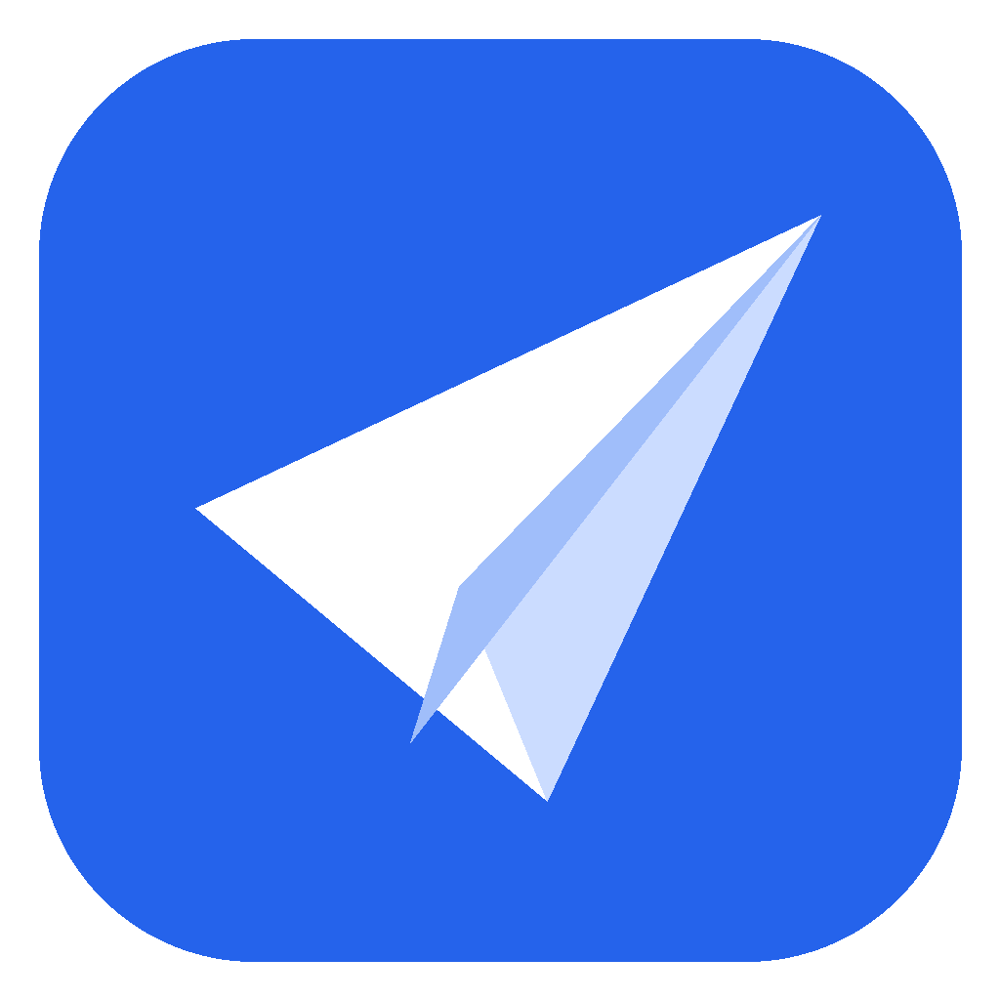

SkyNudge
A Windows app that flies a paper plane across your screen just before your meetings, tasks and reminders, so you never miss one, without pop-ups that steal your focus.
What it does
- Calendar reminders: connect Google Calendar or Outlook (Microsoft 365, Outlook.com) with read-only access. A plane carrying the meeting title flies across your screen a few minutes before it starts.
- Your own tasks and reminders: one-off or repeating (daily, weekdays, weekly, monthly, yearly or custom).
- Never in the way: the plane flies on a transparent, click-through layer, so you can keep typing and clicking while it passes.
- Your choice of screen: main display, a specific monitor, or all of them.
How SkyNudge uses your calendar
When you connect Google Calendar, SkyNudge asks for read-only access (calendar.readonly). It reads your upcoming events (title, time, location and meeting link) only to decide when to fly the plane and what to show on its banner. SkyNudge never creates, changes or deletes events, and your calendar data stays on your own computer. Read the full privacy policy.